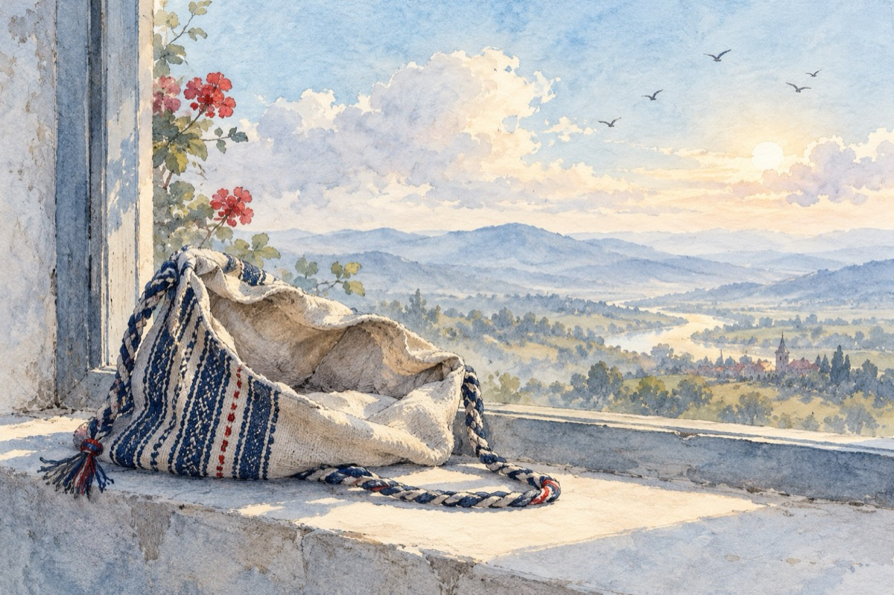

Ținte minte
Și-avea un picior
Tras ca prin inel
Dar nu avea un chior
Colo-n portofel!
Mamă, ce balcoane,
Și ce fund modern
Dar ducea o foame
Viață ca-n infern!
Munca nu-i plăcea
E prea multă trudă
Nu e pentru ea
Iar despre povețe, nu voia s-audă.
Și-atuncea gagica
Ieșit-a la centură
Fără nici o frică
Sau dureri de gură.
Și-a muncit pe brânci
Chiar și răstignită
Cum primea porunci
Pentru-a fi iubită.
Dar s-a întâmplat
Ce nu s-a gândit
Bărbat din bărbat
Și s-a-mbolnăvit.
Geaba ai frumusețea
Ce-o dai pe doi bani
Și nu te duce mintea
De te lași pradă la golani!
Morala:
Dumnezeu îți dă
Dar nu-ți bagă și-n traistă!
Vasile Groza